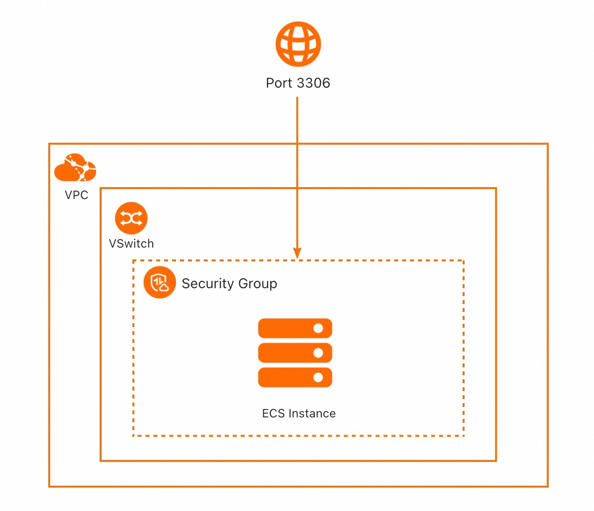

服务模板说明文档
服务说明
本文介绍基于MySQL软件包快速构建托管版单租户计算巢服务，关于计算巢托管版可以参考帮助文档， 本示例采用单ECS的架构，并默认开启了VPC对等连接，用户部署服务实例后，可以直接通过内网访问部署在服务商的MySQL，除此之外还配置了三种套餐，分别为：
| 套餐名 | ECS规格族 | vCPU与内存 | 系统盘 | 公网带宽 |
|---|---|---|---|---|
| 低配版 | ecs.u1-c1m2.large | 内存型c6，2vCPU 4GiB | ESSD云盘 200GiB PL0 | 固定带宽1Mbps |
| 基础版 | ecs.u1-c1m2.xlarge | 内存型c6，4vCPU 8GiB | ESSD云盘 200GiB PL0 | 固定带宽1Mbps |
| 高配版 | ecs.u1-c1m2.2xlarge | 内存型c6，4vCPU 8GiB | ESSD云盘 200GiB PL0 | 固定带宽1Mbps |
本示例对应的Git仓库地址：mysql-managed-vpcpeering-demo
本示例会自动的构建计算巢服务，具体的服务构建流程为:
- 将MySQL安装包（提前存放到该github repo中）构建为计算巢文件部署物
- 创建计算巢服务并关联文件部署物
创建过程大约持续3分钟，当服务变成待提交后构建成功。
部署架构
本部署仅有一台ECS，安全组开放3306端口，每个服务实例将新建Vpc与Vswitch。 
服务构建计费说明
测试本服务构建无需任何费用，创建服务实例涉及的费用参考服务实例计费说明。
服务实例计费说明
测试本服务在计算巢上的费用主要涉及：
- 所选vCPU与内存规格
- 系统盘类型及容量
- 公网带宽
目前提供如下套餐：
| 套餐名 | ECS规格族 | vCPU与内存 | 系统盘 | 公网带宽 |
|---|---|---|---|---|
| 低配版 | ecs.u1-c1m2.large | 内存型c6，2vCPU 4GiB | ESSD云盘 200GiB PL0 | 固定带宽1Mbps |
| 基础版 | ecs.u1-c1m2.xlarge | 内存型c6，4vCPU 8GiB | ESSD云盘 200GiB PL0 | 固定带宽1Mbps |
| 高配版 | ecs.u1-c1m2.2xlarge | 内存型c6，4vCPU 8GiB | ESSD云盘 200GiB PL0 | 固定带宽1Mbps |
预估费用在创建实例时可实时看到。
部署流程
部署参数说明
| 参数族 | 参数项 | 说明 |
|---|---|---|
| 基础配置 | 数据库root和admin账户密码 | 数据库root和admin账户密码，长度8-32个字符，可包含大小字母、数字及特殊符号（包含：!@#$%^&*-+=_）。 |
| 网络配置 | 可用区 | 选择可用区，资源将在服务商的该可用区创建。 |
| 网络设置 | 专有网络IPv4网段 | 填写专有网络IPv4网段，建议您使用RFC私网地址作为专有网络的网段如10.0.0.0/8，172.16.0.0/12，192.168.0.0/16。 |
| 网络设置 | 交换机子网网段 | 填写交换机子网网段。 |
部署步骤
- 部署链接

- 单击部署链接，进入服务实例部署界面，根据界面提示，填写参数完成部署。
 网络配置部分填入新建VPC的IPV4网段与交换机子网网段。
网络配置部分填入新建VPC的IPV4网段与交换机子网网段。
如果需要创建对等连接，这里还需要填写网络设置，网络设置部分填写对等连接的用户侧VPC。
需要注意用户侧VPC的网段不可以与新建VPC网段重叠。
 2. 参数填写完成后可进入订单确认页。
2. 参数填写完成后可进入订单确认页。
 3. 确认订单完成后同意服务协议并点击立即创建
进入部署阶段。
3. 确认订单完成后同意服务协议并点击立即创建
进入部署阶段。

 4. 等待部署完成后就可以开始使用服务。
4. 等待部署完成后就可以开始使用服务。
 网络配置已有对等连接内容（用户在创建服务实例页选择开启VPC对等连接才会显示，若创建时未开启可通过网络变配后续开启）。
网络配置已有对等连接内容（用户在创建服务实例页选择开启VPC对等连接才会显示，若创建时未开启可通过网络变配后续开启）。

使用服务
实例连接
本服务支持VPC对等连接，租户可以通过VPC对等连接实现私网访问，租户私网访问流程：
1. 在服务实例详情 - 立即使用，可以看到私网IP地址，连接时可以通过IP地址进行访问
 2. 在对应的vsw中创建ECS，创建好后安装mysql客户端
2. 在对应的vsw中创建ECS，创建好后安装mysql客户端
yum install mysql
or
apt install mysql-client
3. 在该ECS中连接MySQL，用IP进行连接：
mysql -u admin -h ${实例输出IP地址} -P 3306 -p${密码}

实例变配
本服务支持VpcPeering的新增、修改、删除等操作，具体为：
1. 在服务实例详情点击修改配置
 2. 选择网络变更，点击下一步，依据需求修改、新增、删除对等链接，之后点击下一步修改参数预览：
2. 选择网络变更，点击下一步，依据需求修改、新增、删除对等链接，之后点击下一步修改参数预览：

 3. 确认无误后点击确定，进入变配中状态：
3. 确认无误后点击确定，进入变配中状态：
 4. 等待变配完成，当状态变为已部署代表变配完成。可继续后续功能。
4. 等待变配完成，当状态变为已部署代表变配完成。可继续后续功能。
服务详细说明
本文提前将MySQL社区版安装包存放到该Github Repo中，构建服务过程中会将该安装包发布为计算巢部署物，并在ROS模板写入安装指令，ROS模板引擎在执行时便会自动执行安装了。
wget '{{ computenest::file::MySQL }}' -O mysql-community-release-el6-5.noarch.rpm
rpm -ivh mysql-community-release-el6-5.noarch.rpm
yum repolist all | grep mysql
yum install mysql-community-server -y
{{ computenest::file::MySQL }} 为占位符，会由计算巢服务替换成文件部署物MySQL的http下载地址
文件说明
| 文件路径 | 说明 |
|---|---|
| config.yaml | 构建服务的配置文件，服务构建过程中会使用计算巢命令行工具computenest-cli，computenest-cli会基于该配置文件构建服务 |
| parameters.yaml | 本服务为托管版单租，使用该文件渲染服务商需要配置的网络参数，包括VpcId，VSwitch等 |
| artifact/mysql-community-release-el6-5.noarch.rpm | MySQL社区版安装包，构建过程会将该包发布为计算巢部署物 |
| icons/service_logo.jpg | 构建服务默认的图标 |
| templates/parameters.yaml | 本服务为托管版单租服务，所以只需要用户填写一部分参数，通过该文件指定用户所填参数 |
| templates/template.yaml | ROS模板文件，ROS模板引擎根据该模板能够自动创建出所有的资源 |
templates/template.yaml主要由三部分组成
- Parameters定义需要用户填写的参数，包括付费类型，实例规格，Ipv4网段，交换机子网网段和实例密码可用区参数
- Resources定义需要开的资源，包括新建的Vpc、VSwitch、ECS。
- Outputs定义需要最终在计算巢概览页中对用户展示的输出